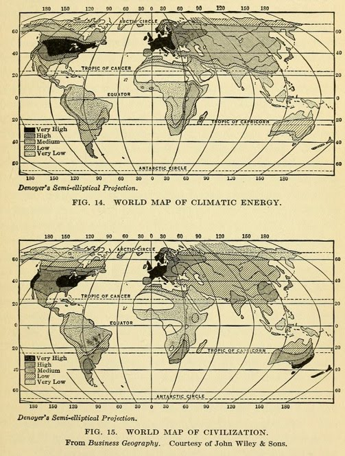

05: Design
Yesterday in the Great Smokies
Webcam archive
Webcam archive
Powers earned 🐉
- You now have the skills to create a map.
- Now, let's give it a little attitude
- and start thinking about a final project.
Announcements
S24 mapping courses
-
GEO 309: Intro to GIS
- MWF: 1:00 pm - 1:50 pm
- TR: 3:30 pm - 4:45 pm
-
GEO 361: GIS Applications for Health
- MWF: 2:00 pm - 2:50 pm
Completing the course
- You NEED to reserve your library tour time for task 4 (5 points)
- You NEED to make it to recitation to complete task 5. (5 points)
- You NEED to make it to lecture AND recitation to complete the final project. (20 points)
Election day week lectures
- Election day: Zoom session (check Canvas for link) where you can ask questions about the final project – or anything else.
- Thursday: fonts and figure-ground
- You NEED to make it to lecture AND recitation to complete the final project. (20 points)
20 points!
- What do you like?
- It can be made into a map.
- Next week, we're gonna ask for an idea. (5/20 points)
Task 5
Reflection across town
- What is your "twin" reflected across Main Street?
- Demonstration of a method used in the FoldedMapProject.com
- Instructions
Lab 5
BluDDCon
- Needs a festival or fantasy map.
- Do both for extra credit.
- Instructions
First option
Make a map showing the location and photograph of the Loudoun House
Second option
Fantasy map of the Bluegrass
Fantasy map?
- Gamers need maps
- and they often harvest them from real geography.
- Red Dead Redemption 2 example.
Persuasive maps
Look persuasive?
Science-y looking maps

- Late 1800s: Climate determines pattern of culture.
- Justified colonialism in non-western world.
- KY native Ellen Churchill Semple was an early contributor.
The humble 🐙
- Became a symbol of human greed
- on maps.
- Scare the viewer to hold their attention.
Don't need a monster
- Just the right color and words.
- William Bunge Nuclear War Atlas, 1982
Persuasive maps
- hold your attention
- and engage your imagination.
- Viewer decides value.
Why maps?
- Viewers often think maps represent reality.
- Artifact with instant credibility.
- Bending Lines exhibition.
Maps as visual medium
- Like a movie poster or photograph
- you see it all at once.
- Use visual hierarchy to help viewer find value.
How to hold someone's attention?
- Make them think, "that's cool."
- Composition will be first challenge.
- Let's explore some of your maps.
Font
Font
- The form of words
- need to be legible and readable.
- The most important selection you make.
Typeface
- Family of similar fonts.
- Pick three typefaces
- Sans serif
- Serif
- Accent (for titles)
Figure/ground
- Print: ground is paper color
- Digital: ground is no color
- Figure: you.
Lab 5
BluDDCon
- Needs a festival or fantasy map.
- Do both for extra credit.
- Instructions